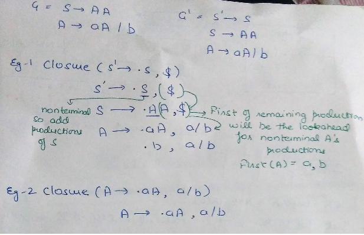
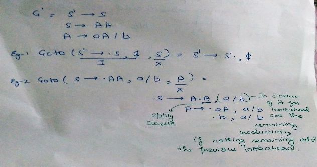
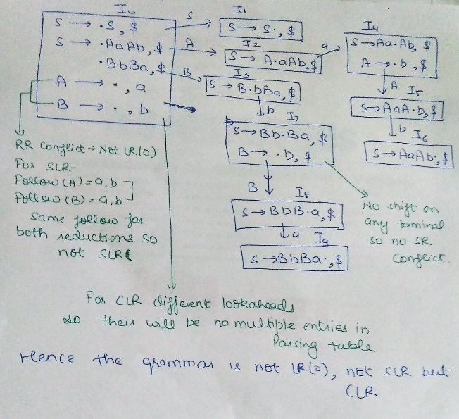
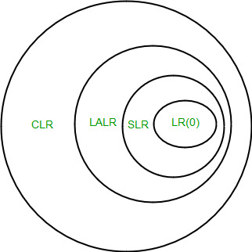

In this article we are discussing the SLR parser, CLR parser and LALR parser which are the parts of Bottom Up parser.
SLR Parser
The SLR parser is similar to LR(0) parser except that the reduced entry. The reduced productions are written only in the FOLLOW of the variable whose production is reduced.
Construction of SLR parsing table –
- Construct C = { I0, I1, ……. In}, the collection of sets of LR(0) items for G’.
- State i is constructed from Ii. The parsing actions for state i are determined as follow :
- If [ A -> ?.a? ] is in Ii and GOTO(Ii , a) = Ij , then set ACTION[i, a] to “shift j”. Here a must be terminal.
- If [A -> ?.] is in Ii, then set ACTION[i, a] to “reduce A -> ?” for all a in FOLLOW(A); here A may not be S’.
- Is [S -> S.] is in Ii, then set action[i, $] to “accept”. If any conflicting actions are generated by the above rules we say that the grammar is not SLR.
- The goto transitions for state i are constructed for all nonterminals A using the rule:
if GOTO( Ii , A ) = Ij then GOTO [i, A] = j. - All entries not defined by rules 2 and 3 are made error.
Eg:
If in the parsing table we have multiple entries then it is said to be a conflict.
Consider the grammar E -> T+E | T
T ->id
Augmented grammar - E’ -> E
E -> T+E | T
T -> id
{kind=link}
Note 1 – for GATE we don’t have to draw the table, in the GOTO graph just look for the reduce and shifts occurring together in one state.. In case of two reductions,if the follow of both the reduced productions have something common then it will result in multiple entries in table hence not SLR. In case of one shift and one reduction,if their is a GOTO operation from that state on a terminal which is the follow of the reduced production than it will result in multiple entries hence not SLR.
Note 2 – Every SLR grammar is unambiguous but their are many unambiguous grammars that are not SLR.
CLR PARSER
In the SLR method we were working with LR(0)) items. In CLR parsing we will be using LR(1) items. LR(k) item is defined to be an item using lookaheads of length k. So , the LR(1) item is comprised of two parts : the LR(0) item and the lookahead associated with the item.
LR(1) parsers are more powerful parser.
For LR(1) items we modify the Closure and GOTO function.
Closure Operation
Closure(I)
repeat
for (each item [ A -> ?.B?, a ] in I )
for (each production B -> ? in G’)
for (each terminal b in FIRST(?a))
add [ B -> .? , b ] to set I;
until no more items are added to I;
return I;
Lets understand it with an example –

{kind=link}
Goto Operation
Goto(I, X)
Initialise J to be the empty set;
for ( each item A -> ?.X?, a ] in I )
Add item A -> ?X.?, a ] to se J; /* move the dot one step */
return Closure(J); /* apply closure to the set */
Eg-

LR(1) items
{kind=link}
Void items(G’)
Initialise C to { closure ({[S’ -> .S, $]})};
Repeat
For (each set of items I in C)
For (each grammar symbol X)
if( GOTO(I, X) is not empty and not in C)
Add GOTO(I, X) to C;
Until no new set of items are added to C;
Construction of GOTO graph
- State I0 – closure of augmented LR(1) item.
- Using I0 find all collection of sets of LR(1) items with the help of DFA
- Convert DFA to LR(1) parsing table
Construction of CLR parsing table-
Input – augmented grammar G’
- Construct C = { I0, I1, ……. In} , the collection of sets of LR(0) items for G’.
- State i is constructed from Ii. The parsing actions for state i are determined as follow :
i) If [ A -> ?.a?, b ] is in Ii and GOTO(Ii , a) = Ij, then set ACTION[i, a] to “shift j”. Here a must be terminal.
ii) If [A -> ?. , a] is in Ii , A ≠ S, then set ACTION[i, a] to “reduce A -> ?”.
iii) Is [S -> S. , $ ] is in Ii, then set action[i, $] to “accept”.
If any conflicting actions are generated by the above rules we say that the grammar is
not CLR. - The goto transitions for state i are constructed for all nonterminals A using the rule: if GOTO( Ii, A ) = Ij then GOTO [i, A] = j.
- All entries not defined by rules 2 and 3 are made error.
Eg:
Consider the following grammar
S -> AaAb | BbBa
A -> ?
B -> ?
Augmented grammar - S’ -> S
S -> AaAb | BbBa
A -> ?
B -> ?
GOTO graph for this grammar will be -

Note – if a state has two reductions and both have same lookahead then it will in multiple entries in parsing table thus a conflict. If a state has one reduction and their is a shift from that state on a terminal same as the lookahead of the reduction then it will lead to multiple entries in parsing table thus a conflict.
LALR PARSER
LALR parser are same as CLR parser with one difference. In CLR parser if two states differ only in lookahead then we combine those states in LALR parser. After minimisation if the parsing table has no conflict that the grammar is LALR also.
Eg:
{kind=link}
consider the grammar S ->AA
A -> aA | b
Augmented grammar - S’ -> S
S ->AA
A -> aA | b
{kind=link}
Important Notes
1. Even though CLR parser does not have RR conflict but LALR may contain RR conflict.
2. If number of states LR(0) = n1,
number of states SLR = n2,
number of states LALR = n3,
number of states CLR = n4 then,
n1 = n2 = n3 <= n4

{kind=link}